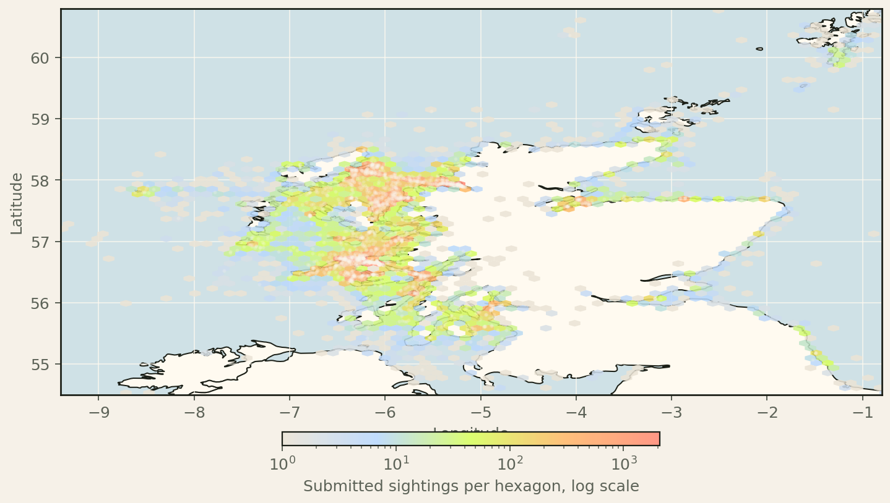

Whale Track insights
Where GPS Sightings Cluster Around Scotland
Each mapped point is a submitted sighting record with latitude and longitude. This shows where reports cluster; it is not a continuous animal track.
Records inside this map
65,284Valid coordinates outside this map
322Valid GPS records in the export
65,606
How to read the color
Colored hexagons group nearby GPS records. Warmer colors mean more submitted sighting records in that area.
Important limit
Coordinates describe report locations. The chart should not be read as exact animal paths or as a full measure of local abundance.